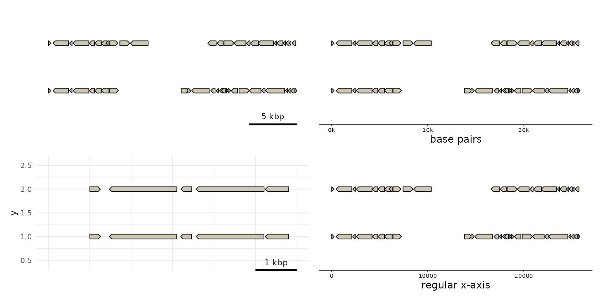

Format genomic positions and scales using human-readable base-pair units.
scale_x_genomic() is the default genomic x-axis scale for gggenomes plots.
It wraps ggplot2::scale_x_continuous() with guide_scalebar() as its
default guide. See axis_scalebar() for convenient configuration and styling
of the scalebar. format_bp() formats numbers as base-pair quantities, and
powers label_bp(), the default scale_x_genomic() labelling function.
Usage
scale_x_genomic(
...,
guide = "scalebar",
unit = "bp",
sep = " ",
digits = 3,
labels = NULL
)
format_bp(
x,
unit = "bp",
sep = " ",
digits = 3,
prefixes = c(k = 1000, M = 1e+06, G = 1e+09),
trim = TRUE,
scientific = FALSE,
...
)
label_bp(unit = "bp", sep = " ", digits = 3)Arguments
- ...
Arguments passed on to
ggplot2::scale_x_continuous()- guide
A function used to create a guide or its name. See
guides()for more information.- unit
unit suffix
- sep
separator between number and unit prefix+suffix
- digits
a positive integer indicating how many significant digits are to be used for numeric and complex
x. The default,NULL, usesgetOption("digits"). This is a suggestion: enough decimal places will be used so that the smallest (in magnitude) number has this many significant digits, and also to satisfynsmall. (For more, notably the interpretation for complex numbers seesignif.)- labels
One of the options below. Please note that when
labelsis a vector, it is highly recommended to also set thebreaksargument as a vector to protect against unintended mismatches.NULLfor no labelswaiver()for the default labels computed by the transformation objectA character vector giving labels (must be same length as
breaks)An expression vector (must be the same length as breaks). See ?plotmath for details.
A function that takes the breaks as input and returns labels as output. Also accepts rlang lambda function notation.
- x
numeric base-pair value.
- prefixes
SI prefixes per thousands.
- trim
logical; if
FALSE, logical, numeric and complex values are right-justified to a common width: ifTRUEthe leading blanks for justification are suppressed.- scientific
either a logical specifying whether elements of a real or complex vector should be encoded in scientific format, or an integer penalty (see
options("scipen")). Missing values correspond to the current default penalty.
Examples
library(patchwork)
p0 <- gggenomes(genes = emale_genes) |> pick(1:2) + geom_gene()
#> No seqs provided, inferring seqs from feats
p1 <- p0 + scale_x_genomic("base pairs", guide = "axis", unit = "", sep = "")
#> Scale for x is already present.
#> Adding another scale for x, which will replace the existing scale.
p2 <- p1 + scale_x_genomic(limits=c(-1000, 5000)) + theme_minimal()
#> Scale for x is already present.
#> Adding another scale for x, which will replace the existing scale.
p3 <- p0 + scale_x_continuous("regular x-axis")
#> Scale for x is already present.
#> Adding another scale for x, which will replace the existing scale.
p0 + p1 + p2 + p3 + plot_layout(ncol=2)
#> Warning: Removed 40 rows containing missing values or values outside the scale range
#> (`geom_gene()`).

format_bp(c(0, 5e5, 1e6, 1.5e6, 2e6), digits=3, scientific=TRUE)
#> [1] "0.0e+00 Mbp" "5.0e-01 Mbp" "1.0e+00 Mbp" "1.5e+00 Mbp" "2.0e+00 Mbp"